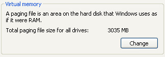

Free
computer Tutorials
|
Free
computer Tutorials
|
|
 home home |
Stay at Home and Learn | ||||
Windows XP System Properties - Advanced
This tutorial assumes that you have set the Control panel to Classic View. To see how to do this, click this link (opens in a new window): Set the Control Panel to Classic View
Ever wondered how to turn off Error Reporting? That's the annoying box you get popping up asking if you want to send an error report to Microsoft. You then get two buttons Send or Don't Send? In this section, we'll see how to switch it off. You can do this via the Advanced tab of the System Properties dialogue box.
To bring up System Properties, click Start and then Control Panel. From the Control Panel, double click System. Another way to bring up this box is to right click the My Computer on your desktop. From the menu, select Properties. A keyboard shortcut is to hold down the Windows Logo key in the bottom left of your keyboard. Keep it held down and press your Pause/Break key. Then click the Advanced tab to see the following: To turn off Error Reporting, click the button at the bottom. You'll then see the following box: Select Disabled error reporting to switch it off. But you may want to keep a tick in the box to notify you of critical errors. XP won't fix them, but at least it will tell you about them! (If you've been wondering why you didn't get a reply when you click the Send Error Report button, it's because clicking Send just notifies Microsoft about the problem. They then collect this information for future reference. If a lot of people are suffering similar problems, then Microsoft may work on a fix.)
Performance SettingsThe only other useful button on the Advanced tab is the Settings button under Performance. This allows you to do things like switch off the shadows under menus and the mouse pointer. Click the button to see the following box: You can select the Custom option from the list of four. Then check or uncheck an item. If you're system is really struggling for memory, you may want turn a few of these off: Animate Windows, Show shadows, and the Fade options. If you click on the Advanced tab above, you'll see an option
for Virtual Memory:  Virtual Memory is used when your computer hasn't got enough to work with. XP will then use some of your hard drive to bail you out. In the image above, XP will use just over 3 gigabytes of this hard drive, if there is not enough real memory to work with. You don't need a massive amount of Virtual Memory, so if yours says something like 20 gigabytes, click the Change button and type a new value. If you're a bit uncertain about all this, it's better not to change anything! But in a modern PC running Windows XP, it's recommended that you have
at least 1 gigabyte of real memory. Many computers have only half of
this. It can make a big difference to how fast your programmes run.
To see how much real memory your computer has, click the General
tab on the System Properties dialogue box: The processor above is 2.25 gigahertz (GHz), and the real memory is 1.00 gigabytes (GB). Consider adding more memory to your PC, if yours is only half this, and running Windows XP.
<--Back One Page Move on to the Next Part--> |
|||||
|